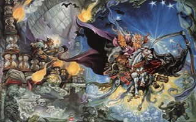Mort (1987)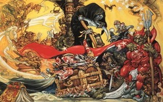Eric (1990)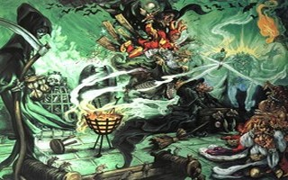Wyrd Sisters (1988)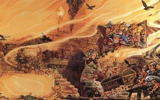The Colour Of Magic (1985)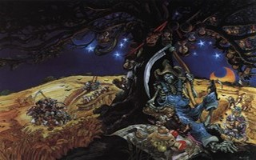Reaper Man (1988)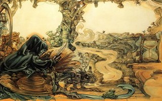Death In His Study (1990)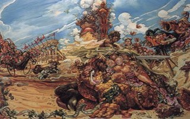Moving Pictures (1990)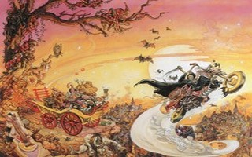Soul Music (1994)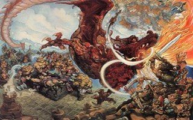Guards, Guards (1989)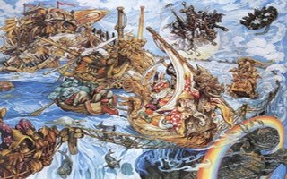Colour Magic - Light Fantastic (1998)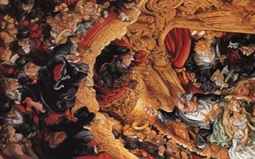Maskerade (1995)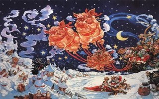Hogfather (1997)